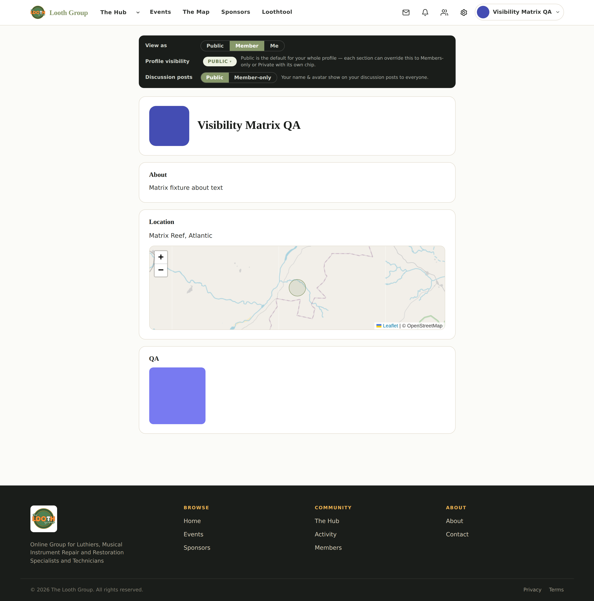
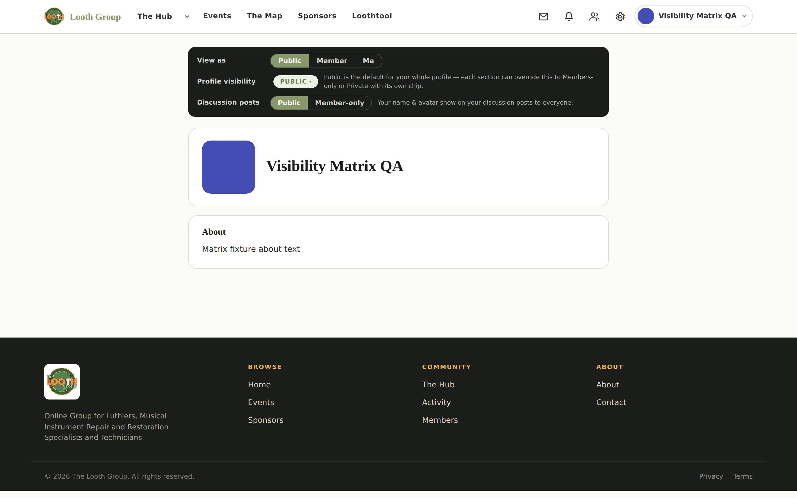
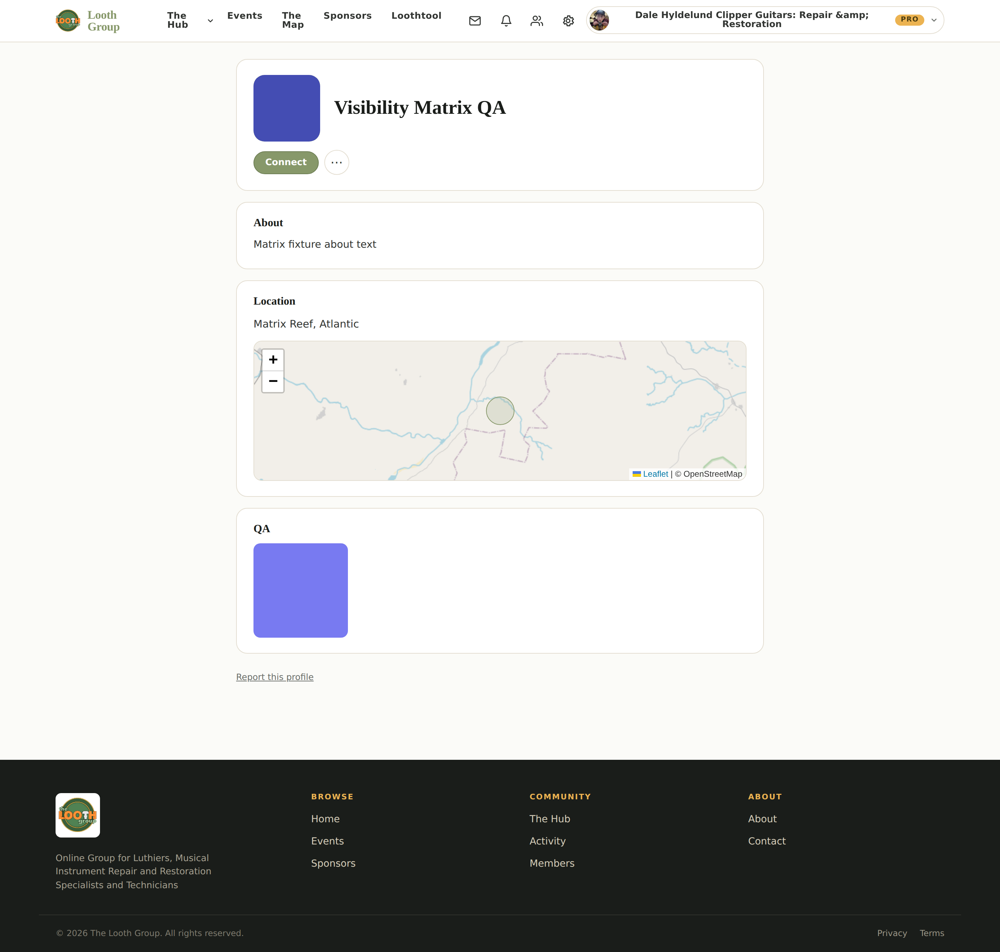
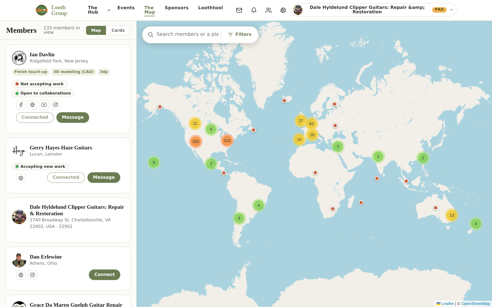

Captured on the dev2 serve, 2026-07-30. Grouped the way the guide reads.
Every frame is checked against the viewport it claims, so a bad capture is labelled
here instead of reaching a reader.
5 of 8 frames need reshooting.
They were captured full-page, which renders the fixed mobile tab bar at its viewport
offset — it lands mid-page across the footer and looks like a broken site. It is a
capture artifact, not a site defect. Each one is marked below.
A. The spine — what an owner sees and edits
The frames the guide is built around. A3 is the one that answers Ian's complaint directly: it shows where sections actually come from.
Not captured yet.
B. Privacy — the part Ian named
Whole-profile visibility, per-section chips, the two-audience location model, and what a logged-out visitor really hits.

B6 · desktopView as Member: the editor is gone entirely.RESHOOT — full-page capture (2882px vs 1800px for desktop) — fixed chrome renders mid-page. Reshoot viewport-only.B6 · phoneView as Member: the editor is gone entirely.RESHOOT — full-page capture (3740px vs 1688px for phone) — fixed chrome renders mid-page. Reshoot viewport-only.

B7 · desktopView as Public: editor gone, privacy panel stays, and the master visibility chip is still live while per-section chips are not. Three claims, one frame.1440×900 viewport-onlyB7 · phoneView as Public: editor gone, privacy panel stays, and the master visibility chip is still live while per-section chips are not. Three claims, one frame.RESHOOT — full-page capture (2612px vs 1688px for phone) — fixed chrome renders mid-page. Reshoot viewport-only.
C. What other people see
The same profile from outside, plus the directory.

C1 · desktopAnother member's profile: no edit affordances, no privacy chips.RESHOOT — full-page capture (2744px vs 1800px for desktop) — fixed chrome renders mid-page. Reshoot viewport-only.C1 · phoneAnother member's profile: no edit affordances, no privacy chips.RESHOOT — full-page capture (3370px vs 1688px for phone) — fixed chrome renders mid-page. Reshoot viewport-only.

C2 · desktopThe directory. Mobile and desktop are separate surfaces.1440×900 viewport-onlyC2 · phoneThe directory. Mobile and desktop are separate surfaces.390×844 viewport-only
D. Entry points
How a member reaches their own profile at all — different on desktop and phone.